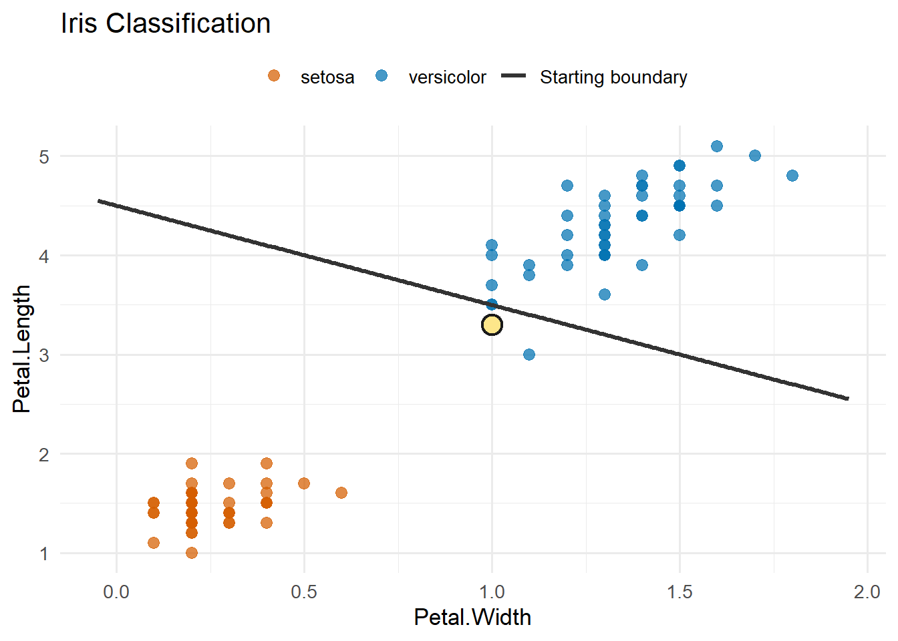
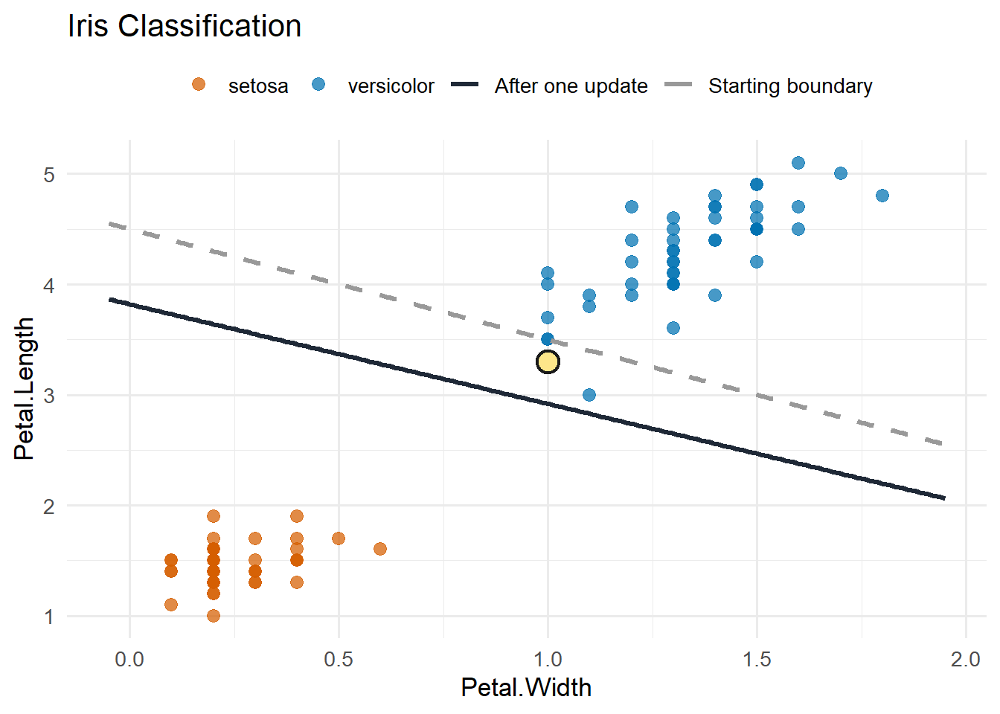
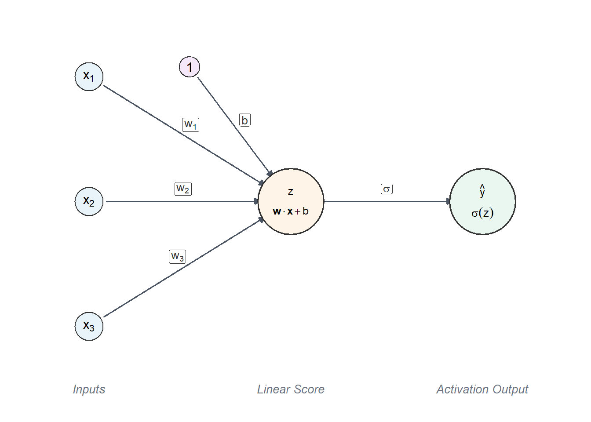
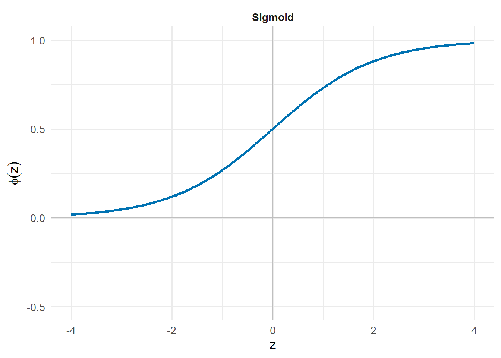
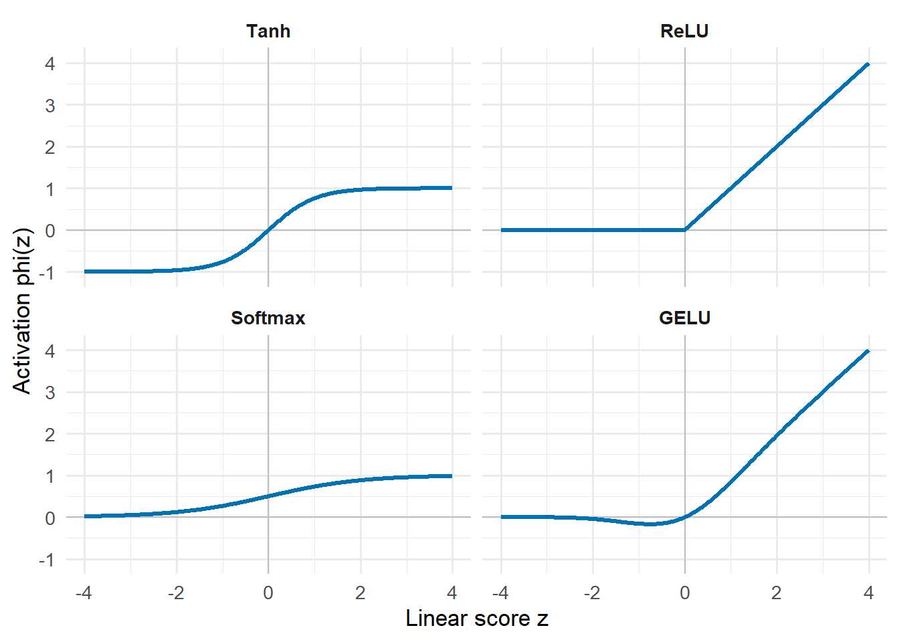
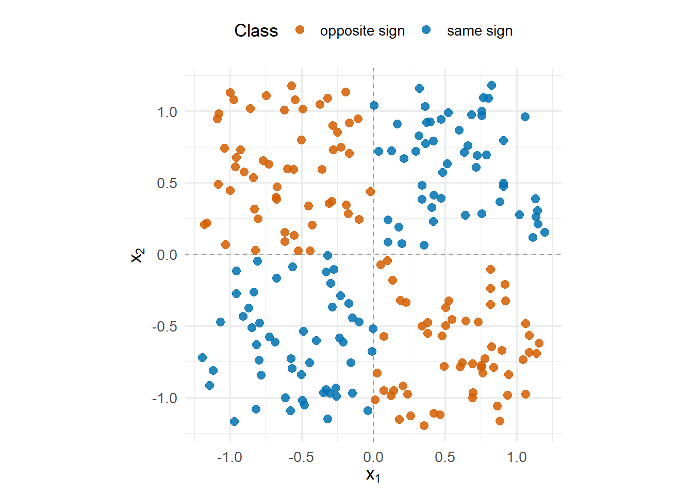

| parameter | starting | updated |
|---|---|---|
| b | -4.5 | -4.450 |
| Petal.Width | 1.0 | 1.050 |
| Petal.Length | 1.0 | 1.165 |
2 The Basic Building Block
An artificial neural network is built from simple computational units. These units are usually called neurons or nodes. The name comes from a loose biological analogy, relating a neural network to the way one’s mind operates. Admittedly, this makes the notion of a neural network appear extremely complex; however, if we break it down, we start with a linear transformation.
2.1 Continuing the Linear Story
Recall that a support vector machine is a binary classification model which creates a linear boundary for an associated decision rule. An SVM has a linear score function defined by
\[ f(\mathbf{x}) = \mathbf{w}\cdot\mathbf{x} + b, \]
where the decision boundary is given by \(f(\mathbf{x}) = 0\). From this boundary, we established the decision rule
\[ \hat{y} = \operatorname{sign}(f(\mathbf{x})). \]
Establishing this decision boundary requires the optimisation of \(\mathbf{w}\) and \(b\); but what are we optimising for? An SVM approach is
- define a margin around the boundary
- maximise the margin width
It would be naive of us to assume that this is the only logical approach; or the only approach that others have tried before. Enter the perceptron…
2.2 The Perceptron
Let us continue with the exact same linear score, but let the decision rule be given as
\[ \hat{y} = \begin{cases} 1, & f(\mathbf{x}) \geq 0,\\ 0, & f(\mathbf{x}) < 0. \end{cases} \]
Whilst an SVM asks
Among all separating boundaries, which one leaves the widest margin between the two classes?
a classical perceptron asks a much simpler question:
What boundary separates the two classes?
With this simpler question, the optimisation much change accordingly.
A perceptron updates its parameters whenever it misclassifies an observation, rather than the elaborate primal to dual margin optimisation problem seen in SVMs.
The typical way to update these parameters is by iterating through the following steps:
- (forward step) compute \(\hat{y}_i\) by using observation \(\mathbf{x}_i\) as an input
- (learning step) update the parameters when the prediction is wrong so that the model is more likely to correctly predict the observation
Using labels \(y_i \in \{0,1\}\), the update can be written as
\[ \begin{aligned} \mathbf{w}_{\text{new}} &= \mathbf{w}_{\text{old}} + \eta (y_i - \hat{y}_i)\mathbf{x}_i,\\ b_{\text{new}} &= b_{\text{old}} + \eta (y_i - \hat{y}_i). \end{aligned} \]
In the above update process, \(\eta\) is known as a learning rate, controlling how much to change the parameters during the update process. It controls the size of each learning step. In practice, \(\eta\) is often chosen as a small positive value.
The perceptron keeps the linear-boundary idea of SVMs, but introduces the training methodology of neural networks: make a prediction, measure the error, and update the weights. Rinse and repeat.
2.2.1 Updating The Iris Boundary
Let us leverage the Iris data; yet again, for another example. As we did in SVMs, we keep two species so that the example is binary, and use Petal.Width and Petal.Length as predictors.
What does the update do?
Suppose that we have the linear decision boundary described by the table below.
The starting boundary, shown in Figure 2.1, is not terrible: it already captures the broad separation between the species. It still makes a mistake near the edge of the versicolor class.

The highlighted observation is a versicolor observation. Under the starting boundary, its score is -0.2, so it is just on the wrong side of the line. Since the true class is versicolor but the starting prediction is setosa, the update adds a small multiple of this observation to the parameters using the update equations.

After one update, the highlighted observation’s score is 0.44. The update has not solved the whole classification problem; it is not claiming to produce a separating boundary. It has simply moved the boundary so that this particular mistake is less likely to happen again. Depending on the starting boundary and the learning rate, the update step may still classify the highlighted observation wrong. This may seem like a failed or pointless update, but the goal of each update is not to correct the prediction, it is to make it incrementally better.
There are no margins or support vectors like SVMs. There is only a boundary that improves when an observation is on the wrong side.
2.2.2 A Notational Step Towards Nets
Let us rewrite the perceptron decision rule as
\[ \hat{y} = \sigma(\mathbf{w}\cdot\mathbf{x} + b), \]
where \(\sigma\) is the piecewise classifier function, formally known as the Heaviside function. The function \(\sigma\) is known as an activation function. When we have the perceptron structure with an activation function other than the Heaviside function, we usually call it a node or neuron, rather than the classical perceptron. Later, we will leverage the activation function to make neural networks nonlinear.

Furthermore, \(z\) is typically reserved for the linear score such that
\[ z = \mathbf{w}\cdot\mathbf{x} + b. \]
2.2.3 What Is Different?
Clearly, the perceptron and the linear SVM are closely related. Both create a hyperplane, defined by
\[ \mathbf{w}\cdot\mathbf{x} + b = 0, \]
and classify points according to which side they fall on. The important difference is the criterion used to choose that hyperplane.
| Feature | Classical perceptron | Linear SVM |
|---|---|---|
| Boundary shape | Linear hyperplane | Linear hyperplane |
| Main goal | Find a separating boundary | Find a separating boundary with a large margin |
| Optimisation criterion | Mistake-driven updates | Margin objective |
| Training signal | Misclassified observations | Margin violations and support vectors |
| Final boundary | Not unique; depends on order, learning rate, and stopping | Chosen by the margin objective |
The most important distinction is the margin. If many lines separate the two classes, the perceptron may stop at any one of them. It has no reason to prefer the line with the widest gap around it.
The SVM is deliberately more demanding. It does not only want correct classification. It wants correct classification with a buffer. That is why the SVM boundary is tied to support vectors and the margin, aiming for generalised model performance.
2.3 Activation Functions
The activation function is where the neuron stops being just a linear score. Let us consider a few activation functions from a perceptron perspective. The Heaviside function is used for binary classification where only the predicted class is the output.
2.3.1 The Sigmoid Activation
The natural binary classification extension of
Provide the class label directly
is given by
Provide the probability associated with the class label.
Therefore, we can have the model provide the probability that the observation is class 1, such that the model output is
\[ \hat{p} = \mathbb{P}(Y = 1 \mid X = \mathbf{x}). \]
It could be either class, but the convention is class 1 in binary classification.
One would then classify the input based on the probability:
\[ \hat{y} = \begin{cases} 1, & \hat{p} > 0.5,\\ 0, & \hat{p} \leq 0.5. \end{cases} \]
Therefore, we want
\[ \hat{p} = \sigma(\mathbf{w}\cdot\mathbf{x} + b) \]
such that \(\sigma: \mathbb{R} \rightarrow (0,1)\); allowing for a smoother probabilistic output from the model, rather than a sharp transition between the classes. A common function used for this purpose is the sigmoid function defined as
\[ \sigma(z) = \frac{1}{1 + e^{-z}}. \]

When using a sigmoid activation function, the optimisation of \(\mathbf{w}\) and \(b\) is done on the probabilities, not just the classification accuracy. In particular, it is beneficial to define an objective function, usually called a loss function in this context, based on cross-entropy. For observation \(i\), the loss or penalty of the model prediction is defined by
\[ \ell_i(\mathbf{w}, b) = - \left[ y_i \log(\hat{p}_i) + (1-y_i)\log(1-\hat{p}_i) \right]. \]
Look familiar? We have set up logistic regression, just from a different perspective.
Earlier in the course, you may have fitted logistic regression using a method such as IWLS. In the neuron perspective, the optimisation remains based on update steps associated with the prediction loss.
There are two useful cases to keep in mind:
\(y_i = 1\)
Then \(\ell_i = -\log(\hat{p}_i)\), so the model is penalised more the further the predicted probability is from 1.
\(y_i = 0\)
Then \(\ell_i = -\log(1-\hat{p}_i)\), so the model is penalised more the further the predicted probability is from 0.
Besides the ability to interpret probabilities from the model, the updating step benefits from this loss function because it is differentiable with respect to both \(\mathbf{w}\) and \(b\). That means that we can use gradients in our optimisation process. We will return to this idea later on.
2.3.2 Keeping It Linear
We have seen how to relate a perceptron to SVMs and logistic regression, both models for binary classification. The perceptron idea is not limited to classification problems though. In fact, the most basic activation function can be used for linear regression problems.
Let the activation function be given by the identity function. Then
\[ \hat{y}_i = z_i = \mathbf{w}\cdot\mathbf{x}_i + b. \]
Here, we are explicitly choosing the identity function, but any linear activation would still keep the model linear. Why is this?
Again, we need to define a loss function in order to optimise \(\mathbf{w}\) and \(b\). It is natural to choose the mean squared error in a regression case:
\[ \mathcal{L}(\mathbf{w}, b) = \frac{1}{n} \sum_{i=1}^n \left( y_i - (\mathbf{w}\cdot\mathbf{x}_i + b) \right)^2. \]
When this is the case, then we have reconstructed linear regression written in neural-network notation.
2.3.3 Other Common Activation Functions
We have analysed the Heaviside, sigmoid and linear activation functions directly because of their relationship to classical models under a perceptron framework. That is not to say that they are the most important. There is a plethora of activation functions, but Figure 2.5 shows some other common activation functions.

Smooth or piecewise-linear activations are useful in modern neural networks because they are mostly differentiable. This matters because gradient-based optimisation needs useful local slope information.
2.4 When The Perceptron Struggles
The perceptron learning algorithm has a convergence guarantee only when the classes are linearly separable. If no separating boundary exists, the basic algorithm can keep correcting one point only to break another. The learning rate affects the size of the updates, but separability is the central condition.
Consider the following problem, known as the XOR problem:

A single perceptron is the wrong shape for this problem. We can keep moving a line around, but the problem itself is not linearly separable.
This is the same type of issue that motivated nonlinear SVMs. In the SVM case, we solved it through feature transformations and kernels. The kernel defines a richer similarity or feature space, and the SVM still searches for a margin-based boundary there.
The perceptron approach is to combine neurons to induce nonlinear boundaries.
2.5 Takeaway
A single neuron does two things:
- it performs a linear transformation on the inputs
- it applies an activation function
The classical perceptron uses this structure to make a binary classification rule. By itself, it creates a linear boundary, just as a linear SVM does. The SVM asks for the widest-margin version of that boundary; yet, the perceptron asks for a boundary that classifies the training data correctly when such a boundary exists.
Changing the activation and the training criterion connects the same linear score to models we have already seen. A Heaviside activation with mistake-driven updates gives the classical perceptron. A sigmoid activation with cross-entropy gives logistic regression. A linear activation with squared error gives linear regression.